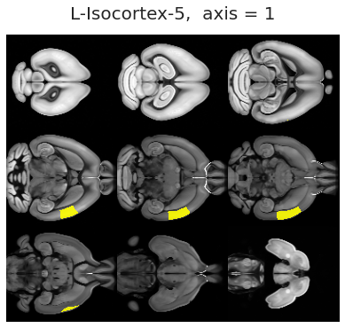
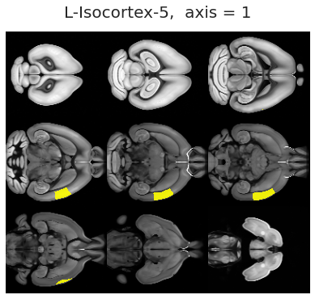
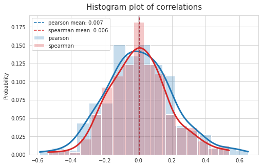

June 7th, 2021¶
Motivation: Spatially homogenous parcellation (fMRI). Functional connectivity, community structure
# HIDE CODE
import os
import ants
import nrrd
import sys
import collections
import numpy as np
import pandas as pd
import nibabel as nib
import networkx as nx
import operator as op
from copy import deepcopy as dc
from os.path import join as pjoin
from tqdm.notebook import tqdm
import matplotlib.pyplot as plt
import seaborn as sns
sns.set_style('whitegrid')
# GitHub
git_path = pjoin(os.environ['HOME'], 'Dropbox/git/Ca-fMRI/')
sys.path.insert(0, git_path)
from utils.processing import *
from utils.network import *
from utils.plotting import *
# Allen
allen_ws = pjoin(os.environ['HOME'], 'Documents/workspaces/allen')
allen_path = pjoin(allen_ws, 'MouseConnectivity')
os.makedirs(allen_path, exist_ok=True)
from allensdk.core.mouse_connectivity_cache import MouseConnectivityCache
from allensdk.api.queries.ontologies_api import OntologiesApi
# warnings
import warnings
warnings.filterwarnings('ignore', category=DeprecationWarning)
# HIDE CODE
def trim_axs(axes, n):
axs = axes.flat
for ax in axs[n:]:
ax.remove()
return axs[:n]
def reset_ants_img(img: Union[np.ndarray, ants.ANTsImage], dtype=float, origin=0.0, spacing=1.0):
ndims = len(img.shape)
if isinstance(img, ants.ANTsImage):
img = img.numpy()
return ants.from_numpy(img.astype(dtype), origin=[origin]*ndims, spacing=[spacing]*ndims)
def add_children(graph: nx.DiGraph(), src_id: int, level: int, mcc: MouseConnectivityCache = None):
mcc = MouseConnectivityCache(resolution=100) if mcc is None else mcc
structure_tree = mcc.get_structure_tree()
src = structure_tree.get_structures_by_id([src_id])[0]
children = structure_tree.children([src_id])[0]
for child in children:
src_name = '\n'.join(src['name'].split(' '))
tgt_name = '\n'.join(child['name'].split(' '))
graph.add_node(tgt_name, lvl=level)
graph.add_edge(src_name, tgt_name)
return graph, children
def make_tree_graph(root: str, n_levels: int = 3, mcc: MouseConnectivityCache = None):
mcc = MouseConnectivityCache(resolution=100) if mcc is None else mcc
structure_tree = mcc.get_structure_tree()
structure = structure_tree.get_structures_by_name([root])[0]
g = nx.DiGraph()
g.add_node('\n'.join(structure['name'].split(' ')), lvl=0)
dend = {}
for lvl in range(n_levels):
if lvl == 0:
src_ids = [structure['id']]
else:
new_leaves = []
for i in src_ids:
g, children = add_children(graph=g, src_id=i, level=lvl)
for child in children:
new_leaves.append(child['id'])
src_ids = new_leaves
dend[lvl] = src_ids
return g, dend
def reorient_arr(x: np.ndarray, tr_axes: Tuple = (2, 1, 0)):
if len(x.shape) == 4:
tr_axes += (3,)
return np.transpose(x, tr_axes)[::-1]
def mask_left_right(mask: np.ndarray, left_right_axis: int = 2):
npix = mask.shape[left_right_axis]
coverage = int(np.ceil(npix/2))
slices_l = tuple(
slice(0, coverage) if i == left_right_axis else slice(mask.shape[i])
for i in range(len(mask.shape))
)
slices_r = tuple(
slice(npix-coverage, npix) if i == left_right_axis else slice(mask.shape[i])
for i in range(len(mask.shape))
)
mask_l = mask.copy().astype(bool)
mask_r = mask.copy().astype(bool)
mask_l[slices_r] = 0
mask_r[slices_l] = 0
return mask_l.astype(bool), mask_r.astype(bool)
from time import time
from sklearn.cluster import KMeans
import sklearnex
def kmeans_parcellation(
mask: np.ndarray,
num_regions: int = 256,
symmetrize: bool = False,
left_right_axis: int = 2,
random_state: int = 42, ):
sklearnex.patch_sklearn()
mask_l, mask_r = mask_left_right(mask, left_right_axis)
if symmetrize:
mask_r_full = mask_r.copy()
mask_l_full = mask_l.copy()
mask_r_full[slices_l] = np.flip(mask_r[slices_r], axis=left_right_axis)
mask_l_full[slices_r] = np.flip(mask_l[slices_l], axis=left_right_axis)
mask_sym = np.logical_and(mask_r_full, mask_l_full)
mask_l = mask_sym.copy().astype(bool)
mask_r = mask_sym.copy().astype(bool)
mask_l[slices_r] = 0
mask_r[slices_l] = 0
# do left
atlas_kmeans, cluster_centers = _do_kmeans(mask_l, num_regions, random_state)
# mirror symmetry clusters to right hemisphere
for region_id in np.unique(atlas_kmeans[atlas_kmeans > 0]):
region_id_r = region_id + num_regions
flipped = np.flip(atlas_kmeans[slices_l], axis=left_right_axis)
atlas_kmeans[slices_r][flipped == region_id] = region_id_r
# get center for right cluster
_ctr = cluster_centers[region_id].copy()
delta = npix/2 - _ctr[left_right_axis]
_ctr[left_right_axis] += 2*delta - 1
cluster_centers[region_id_r] = _ctr
else:
atlas_kmeans_l, cluster_centers_l = _do_kmeans(mask_l, num_regions, random_state)
atlas_kmeans_r, cluster_centers_r = _do_kmeans(mask_r, num_regions, random_state)
atlas_kmeans_r += num_regions
cluster_centers_r = {i+num_regions: ctr for i, ctr in cluster_centers_r.items()}
atlas_kmeans = atlas_kmeans_l.copy()
atlas_kmeans[mask_r] = atlas_kmeans_r[mask_r]
cluster_centers = {**cluster_centers_l, **cluster_centers_r}
sklearnex.unpatch_sklearn()
output = {
'atlas_kmeans': atlas_kmeans.astype(int),
'cluster_centers': cluster_centers,
'mask_l': mask_l.astype(bool),
'mask_r': mask_r.astype(bool),
}
return output
def _do_kmeans(x, num_regions, random_state):
nonzero_voxels = list(zip(*np.where(x.astype(bool))))
nonzero_voxels = np.reshape(nonzero_voxels, (-1, len(x.shape)))
nonzero_voxels = nonzero_voxels.astype(int)
kmeans = KMeans(
n_clusters=num_regions,
random_state=random_state,
).fit(nonzero_voxels.astype(float))
roi = kmeans.predict(nonzero_voxels.astype(float))
roi_unique = []
for lbl in roi:
if lbl not in roi_unique:
roi_unique.append(lbl)
mapping = {lbl: i+1 for i, lbl in enumerate(roi_unique)}
roi_relabeld = np.zeros_like(roi)
for lbl in roi_unique:
roi_relabeld[roi == lbl] = mapping[lbl]
atlas_kmeans_dict = defaultdict(list)
for voxel, lbl in zip(nonzero_voxels, roi_relabeld):
atlas_kmeans_dict[lbl].append(tuple(voxel))
atlas_kmeans_dict = dict(atlas_kmeans_dict)
atlas_kmeans = np.zeros(x.shape, dtype=int)
for region_id, voxel_list in atlas_kmeans_dict.items():
atlas_kmeans[tuple(zip(*voxel_list))] = region_id
cluster_centers = {mapping[lbl]: kmeans.cluster_centers_[lbl] for lbl in roi_unique}
return atlas_kmeans, cluster_centers
def translate_labels(labels: List[str], mcc: MouseConnectivityCache = None):
labels = list(labels) if not isinstance(labels, (list, tuple, dict)) else labels
mcc = MouseConnectivityCache(resolution=100) if mcc is None else mcc
structure_tree = mcc.get_structure_tree()
left_right = []
structure_ids = []
region_ids = []
for label in labels:
try:
lr, structure_id, region_id = tuple(map(lambda x: int(x), label.split('-')))
except ValueError:
lr, structure_id = tuple(map(lambda x: int(x), label.split('-')))
region_id = None
left_right.append('L' if lr == 0 else 'R')
structure_ids.append(structure_id)
region_ids.append(region_id)
structures = structure_tree.get_structures_by_id(structure_ids)
translated = [
'{:s}-{:s}'.format(lr, struct['name']) if region_id is None else
'{:s}-{:s}-{:d}'.format(lr, struct['name'], region_id)
for lr, struct, region_id in zip(left_right, structures, region_ids)
]
return translated
def plot_parcellation(
parcellation: np.ndarray,
mask_l: np.ndarray,
mask_r: np.ndarray,
root_mask: np.ndarray,
figsize=(9, 7),
cmap='turbo', ):
sns.set_style('whitegrid')
fig, axes = plt.subplots(2, 3, figsize=figsize)
for i in range(2):
for j in range(3):
x = parcellation.copy()
if i == 0:
x[mask_r] = 0
label = 'left\n'
else:
x[mask_l] = 0
# x[x != 0] -= int(np.max(parcellation) // 2)
label = 'right\n'
if j == 0:
title = 'coronal'
elif j == 1:
title = 'axial'
else:
title = 'saggital'
data2plt = np.ma.masked_where(~root_mask.astype(bool), x)
axes[i, j].imshow(data2plt.mean(j), cmap=cmap)
list(map(lambda x: x.set_visible(False), axes[i, j].spines.values()))
axes[i, j].set_xticks([])
axes[i, j].set_yticks([])
if i == 0:
axes[i, j].set_title(title, fontsize=17, y=1.2)
else:
axes[i, j].set_title('')
if j == 0:
axes[i, j].set_ylabel(label, fontsize=17)
fig.tight_layout()
plt.show()
return fig, axes
def plot_registration(
fixed: np.ndarray,
moving: np.ndarray,
warped: np.ndarray,
figsize=(6, 8), ):
sns.set_style('white')
fig, axes = plt.subplots(3, 3, figsize=figsize)
for i in range(3):
for j in range(3):
if i == 0:
x = fixed.numpy()
label = 'fixed'
elif i == 1:
x = moving.numpy()
label = 'moving'
else:
x = warped.numpy()
label = 'warped'
if i == 0:
if j == 0:
top_title = 'axis = {:d}\n(coronal)'.format(j)
elif j == 1:
top_title = 'axis = {:d}\n(axial)'.format(j)
else:
top_title = 'axis = {:d}\n(saggital)'.format(j)
axes[i, j].set_title(top_title, y=1.1, fontsize=13)
if j == 0:
axes[i, j].set_ylabel(label + '\n', fontsize=13)
data2plt = x.mean(j)
axes[i, j].imshow(data2plt)
_ = list(map(lambda x: x.set_visible(False), axes[i, j].spines.values()))
axes[i, j].set_xticks([])
axes[i, j].set_yticks([])
msg = 'Plotting averaged data across different dimensions\n\n'
msg += '1st row (fixed): Average template, shape = {}\n'.format(fixed.shape)
msg += '2nd row (moving): Anatomical data, shape = {}\n'.format(moving.shape)
msg += '3rd row (warped): Anatomical data, shape = {}'.format(warped.shape)
plt.suptitle(msg, fontsize=14, y=1.02)
plt.tight_layout()
plt.show()
return fig, axes
import allensdk
print(allensdk.__version__)
2.11.2
Load Allen data¶
manifest_file = pjoin(allen_ws, 'MouseConnectivity', 'manifest.json')
mcc = MouseConnectivityCache(resolution=100, manifest_file=manifest_file)
structure_tree = mcc.get_structure_tree()
root = structure_tree.get_structures_by_name(['root'])[0]
cerebrum = structure_tree.get_structures_by_name(['Cerebrum'])[0]
isocortex = structure_tree.get_structures_by_name(['Isocortex'])[0]
template, template_info = mcc.get_template_volume()
annot, annot_info = mcc.get_annotation_volume()
root_mask, root_mask_info = mcc.get_structure_mask(root['id'])
cerebrum_mask, cerebrum_mask_info = mcc.get_structure_mask(cerebrum['id'])
cortex_mask, cortex_mask_info = mcc.get_structure_mask(isocortex['id'])
from prettytable import PrettyTable
table = PrettyTable(field_names=['lvl', 'name', '# voxels', 'relative sz'])
_, dend = make_tree_graph(root='Cerebrum', n_levels=4)
m0 = mcc.get_structure_mask(cerebrum['id'])[0]
names = collections.defaultdict(list)
for lvl, struct_ids in dend.items():
for struct_id in struct_ids:
name = structure_tree.get_structures_by_id([struct_id])[0]['name']
if name == 'Layer 6b, isocortex':
continue
names[lvl].append(name)
m1 = mcc.get_structure_mask(struct_id)[0]
table.add_row([lvl, name, m1.sum(), '{:.1f} {:s}'.format(m1.sum() / m0.sum() * 100, '%')])
if lvl < len(dend) - 1:
table.add_row([''] * len(table.field_names))
names = dict(names)
print(table)
+-----+--------------------------------+----------+-------------+
| lvl | name | # voxels | relative sz |
+-----+--------------------------------+----------+-------------+
| 0 | Cerebrum | 275611 | 100.0 % |
| | | | |
| 1 | Cerebral cortex | 221252 | 80.3 % |
| 1 | Cerebral nuclei | 54359 | 19.7 % |
| | | | |
| 2 | Cortical plate | 212402 | 77.1 % |
| 2 | Cortical subplate | 8850 | 3.2 % |
| 2 | Striatum | 45063 | 16.4 % |
| 2 | Pallidum | 9296 | 3.4 % |
| | | | |
| 3 | Isocortex | 123245 | 44.7 % |
| 3 | Olfactory areas | 46478 | 16.9 % |
| 3 | Hippocampal formation | 42679 | 15.5 % |
| 3 | Claustrum | 545 | 0.2 % |
| 3 | Endopiriform nucleus | 2757 | 1.0 % |
| 3 | Lateral amygdalar nucleus | 843 | 0.3 % |
| 3 | Basolateral amygdalar nucleus | 1888 | 0.7 % |
| 3 | Basomedial amygdalar nucleus | 1485 | 0.5 % |
| 3 | Posterior amygdalar nucleus | 966 | 0.4 % |
| 3 | Striatum dorsal region | 26040 | 9.4 % |
| 3 | Striatum ventral region | 8699 | 3.2 % |
| 3 | Lateral septal complex | 3584 | 1.3 % |
| 3 | Striatum-like amygdalar nuclei | 4057 | 1.5 % |
| 3 | Pallidum, dorsal region | 1987 | 0.7 % |
| 3 | Pallidum, ventral region | 3367 | 1.2 % |
| 3 | Pallidum, medial region | 1484 | 0.5 % |
| 3 | Pallidum, caudal region | 1349 | 0.5 % |
+-----+--------------------------------+----------+-------------+
ROI definition (CCF space)¶
num_regions = 8
parcellation = kmeans_parcellation(
mask=cortex_mask,
num_regions=num_regions,
symmetrize=False,
left_right_axis=2,
)
Intel(R) oneAPI Data Analytics Library solvers for sklearn enabled: https://intelpython.github.io/daal4py/sklearn.html
_ = plot_parcellation(
parcellation=parcellation['atlas_kmeans'],
mask_l=parcellation['mask_l'],
mask_r=parcellation['mask_r'],
root_mask=root_mask,
)
x = parcellation['atlas_kmeans'].copy().astype(float)
x[x == 0] = np.nan
for axis in range(3):
ants.from_numpy(template.astype(float)).plot(
overlay=ants.from_numpy(x),
overlay_cmap='Paired',
overlay_alpha=0.99,
axis=axis,
nslices=9,
title='iscortex ROIs (axis = {:d})'.format(axis),
figsize=1.5 if axis == 2 else 2.5,
cbar=True,
cbar_dx=0.07,
)
#x = parcellation['atlas_kmeans'].copy().astype(float)
atlas_kmeans_eroded = np.zeros_like(parcellation['atlas_kmeans'])
radius = 6
accepted = 0
rejected = 0
for region_id, ctr in tqdm(parcellation['cluster_centers'].items(), leave=False):
for voxel in list(zip(*np.where(parcellation['atlas_kmeans'] == region_id))):
dist = np.linalg.norm(ctr - voxel)
if dist < radius:
atlas_kmeans_eroded[voxel] = region_id
accepted += 1
else:
rejected += 1
accepted, rejected
(13562, 109683)
_ = plot_parcellation(
parcellation=atlas_kmeans_eroded,
mask_l=parcellation['mask_l'],
mask_r=parcellation['mask_r'],
root_mask=root_mask,
)
x = atlas_kmeans_eroded.copy().astype(float)
x[x == 0] = np.nan
for axis in range(3):
ants.from_numpy(template.astype(float)).plot(
overlay=ants.from_numpy(x),
overlay_cmap='Paired',
overlay_alpha=0.99,
axis=axis,
nslices=9,
figsize=1.5 if axis == 2 else 2.5,
title='iscortex ROIs (axis = {:d})'.format(axis),
title_dy=0.04,
cbar=True,
cbar_dx=0.07,
)
x = atlas_kmeans_eroded.copy().astype(float)
vals = []
for region_id in np.unique(x[x > 0]):
vals.append(x[x == region_id].sum() / cortex_mask.sum() * 100)
sns.histplot(vals, kde=True)
<AxesSubplot:ylabel='Count'>
np.min(vals), np.max(vals)
(0.7229502211043045, 10.567568664043165)
Define ROIs¶
selected_names = [
'Striatum',
'Pallidum',
'Olfactory areas',
'Cortical subplate',
'Hippocampal formation',
'Isocortex',
]
selected_names
['Striatum',
'Pallidum',
'Olfactory areas',
'Cortical subplate',
'Hippocampal formation',
'Isocortex']
root_mask_l, root_mask_r = mask_left_right(root_mask)
selected_structures = structure_tree.get_structures_by_name(selected_names)
roi_masks = {}
for structure_dict in selected_structures:
print('id: {:d},\tname: {:s}'.format(structure_dict['id'], structure_dict['name']))
if structure_dict['name'] == 'Isocortex':
for region_id_l in range(1, num_regions+1):
region_id_r = region_id_l + num_regions
_mask_l = atlas_kmeans_eroded == region_id_l
_mask_r = atlas_kmeans_eroded == region_id_r
roi_masks['0-{:d}-{:d}'.format(structure_dict['id'], region_id_l)] = _mask_l.astype(bool)
roi_masks['1-{:d}-{:d}'.format(structure_dict['id'], region_id_r)] = _mask_r.astype(bool)
else:
_mask = mcc.get_structure_mask(structure_dict['id'])[0]
_mask_l = np.logical_and(_mask, root_mask_l)
_mask_r = np.logical_and(_mask, root_mask_r)
roi_masks['0-{:d}'.format(structure_dict['id'])] = _mask_l.astype(bool)
roi_masks['1-{:d}'.format(structure_dict['id'])] = _mask_r.astype(bool)
id: 477, name: Striatum
id: 803, name: Pallidum
id: 698, name: Olfactory areas
id: 703, name: Cortical subplate
id: 1089, name: Hippocampal formation
id: 315, name: Isocortex
roi_masks.keys()
dict_keys(['0-477', '1-477', '0-803', '1-803', '0-698', '1-698', '0-703', '1-703', '0-1089', '1-1089', '0-315-1', '1-315-9', '0-315-2', '1-315-10', '0-315-3', '1-315-11', '0-315-4', '1-315-12', '0-315-5', '1-315-13', '0-315-6', '1-315-14', '0-315-7', '1-315-15', '0-315-8', '1-315-16'])
Register using ANTs¶
Load anat + func data¶
config = Config()
func = {}
for key, (subject, session, run) in tqdm(config.looper.items()):
if subject != 6 or session != 1:
continue
# for now we're interested in rest only
if run % 2 == 0:
continue
keywords = key.split('_')[:2] + ['space-individual']
# func
kws_func = keywords + ['run-{:d}'.format(run), 'bold']
gen = (x for x in sorted(os.listdir(config.raw_dir)) if all(k in x for k in kws_func))
try:
func_file = pjoin(config.raw_dir, next(gen))
except StopIteration:
continue
x = nib.load(func_file).get_fdata()
func[key] = reorient_arr(x)
# since we don't need to loop over runs for this
if run != 1:
continue
# anat
kws_anat = keywords + ['T1w']
gen = (x for x in sorted(os.listdir(config.raw_dir)) if all(k in x for k in kws_anat))
anat_file = pjoin(config.raw_dir, next(gen))
# mask
kws_mask = keywords + ['desc-mask', 'bold']
gen = (x for x in sorted(os.listdir(config.raw_dir)) if all(k in x for k in kws_mask))
mask_file = pjoin(config.raw_dir, next(gen))
# load anat and mask and reorient
moving = nib.load(anat_file).get_fdata()
mask = nib.load(mask_file).get_fdata()
moving *= mask
moving = reorient_arr(moving)
moving_mask = ants.from_numpy(moving).get_mask().numpy()
moving, moving_mask, fixed = [
ants.from_numpy(arr.astype(float), origin=[0]*3, spacing=[1.0]*3)
for arr in [moving, moving_mask, template]
]
moving.shape, moving_mask.shape, func[config.get_key(6, 1, 1)].shape, fixed.shape
((78, 64, 64), (78, 64, 64), (78, 64, 64, 600), (132, 80, 114))
Register¶
n_seeds = 10
seeds = [2**i for i in range(n_seeds)]
# dict_list = []
transforms = []
performances = []
for seed in seeds:
tx = ants.registration(
fixed=fixed,
moving=moving,
mask=moving_mask,
type_of_transform='SyN',
verbose=True,
random_seed=42,
)
warped = ants.apply_transforms(
fixed=fixed,
moving=moving,
transformlist=tx['fwdtransforms'],
interpolator='linear',
)
# transforms[seed] = tx
mi = ants.image_mutual_information(fixed, warped)
mi_base = ants.image_mutual_information(fixed, fixed)
transforms.append(tx)
performances.append(mi/mi_base)
best_tx = transforms[np.argmax(performances)]
warped = ants.apply_transforms(
fixed=fixed,
moving=moving,
transformlist=best_tx['fwdtransforms'],
interpolator='linear',
)
warped
ANTsImage (RAI)
Pixel Type : float (float32)
Components : 1
Dimensions : (132, 80, 114)
Spacing : (1.0, 1.0, 1.0)
Origin : (0.0, 0.0, 0.0)
Direction : [1. 0. 0. 0. 1. 0. 0. 0. 1.]
mi = ants.image_mutual_information(fixed, warped)
mi_base = ants.image_mutual_information(fixed, fixed)
mi/mi_base
0.449083065105825
_ = plot_registration(fixed, moving, warped)
Inv mask transforms¶
roi_masks_inv = {
lbl: ants.apply_transforms(
fixed=moving,
moving=ants.from_numpy(mask.astype(float), origin=[0]*3, spacing=[1.0]*3),
transformlist=best_tx['invtransforms'],
interpolator='genericLabel',
)
for lbl, mask in roi_masks.items()
}
mask_l_inv, mask_r_inv, root_mask_inv, cerebrum_mask_inv = [
ants.apply_transforms(
fixed=moving,
moving=ants.from_numpy(mask.astype(float), origin=[0]*3, spacing=[1.0]*3),
transformlist=best_tx['invtransforms'],
interpolator='genericLabel',)
for mask in [parcellation['mask_l'], parcellation['mask_r'], root_mask, cerebrum_mask]
]
atlas_kmeans_inv = np.zeros(moving.shape)
for key, mask_inv in roi_masks_inv.items():
if str(isocortex['id']) not in key:
continue
region_id = key.split('-')[-1]
atlas_kmeans_inv[mask_inv.numpy().astype(bool)] = region_id
_ = plot_parcellation(
parcellation=atlas_kmeans_inv,
mask_l=mask_l_inv.numpy().astype(bool),
mask_r=mask_r_inv.numpy().astype(bool),
root_mask=root_mask_inv.numpy().astype(bool),
)
Combine functional data¶
func_CH = {
k: v * np.expand_dims(cerebrum_mask_inv.numpy(), axis=-1).astype(bool)
for k, v in func.items()
}
mean_sd = {k: (v[cerebrum_mask_inv.numpy().astype(bool), :].mean(),
v[cerebrum_mask_inv.numpy().astype(bool), :].std())
for k, v in func_CH.items()
}
func_CH_n = {k: (func_CH[k] - mean) / sd for k, (mean, sd) in mean_sd.items()}
{k: (
np.round(v[cerebrum_mask_inv.numpy().astype(bool), :].mean(), decimals=7),
np.round(v[cerebrum_mask_inv.numpy().astype(bool), :].std(), decimals=7),
) for k, v in func_CH_n.items()}
{'sub-SLC06_ses-1_run-1': (0.0, 1.0),
'sub-SLC06_ses-1_run-3': (-0.0, 1.0),
'sub-SLC06_ses-1_run-5': (0.0, 1.0),
'sub-SLC06_ses-1_run-7': (-0.0, 1.0)}
func_CH[config.get_key(6, 1, 1)].shape
(78, 64, 64, 600)
t = 400
plt.imshow(np.abs(func_CH_n[config.get_key(6, 1, 1)])[34, :, :, t])
plt.colorbar()
<matplotlib.colorbar.Colorbar at 0x7fbee03c5910>
Put into df¶
dict_list = []
for key, x in func_CH_n.items():
nt = x.shape[-1]
for region_id, mask in roi_masks_inv.items():
subject, session, run = config.looper[key]
data_dict = {
'bold': x[mask.numpy().astype(bool), :].mean(0),
'timepoint': range(nt*(run-1), nt*run),
'region_id': [region_id] * nt,
'subject': [subject] * nt,
'session': [session] * nt,
'run': [run] * nt,
}
dict_list.append(data_dict)
df = pd.DataFrame(merge_dicts(dict_list))
df
| bold | timepoint | region_id | subject | session | run | |
|---|---|---|---|---|---|---|
| 0 | -0.032477 | 0 | 0-477 | 6 | 1 | 1 |
| 1 | -0.104746 | 1 | 0-477 | 6 | 1 | 1 |
| 2 | -0.103009 | 2 | 0-477 | 6 | 1 | 1 |
| 3 | -0.029612 | 3 | 0-477 | 6 | 1 | 1 |
| 4 | -0.031896 | 4 | 0-477 | 6 | 1 | 1 |
| ... | ... | ... | ... | ... | ... | ... |
| 62395 | -0.046887 | 4195 | 1-315-16 | 6 | 1 | 7 |
| 62396 | 0.120440 | 4196 | 1-315-16 | 6 | 1 | 7 |
| 62397 | 0.135188 | 4197 | 1-315-16 | 6 | 1 | 7 |
| 62398 | -0.177976 | 4198 | 1-315-16 | 6 | 1 | 7 |
| 62399 | -0.571754 | 4199 | 1-315-16 | 6 | 1 | 7 |
62400 rows × 6 columns
df_table = {}
for key, (subject, session, run) in config.looper.items():
selected_df = df.loc[
(df.subject == subject) &
(df.session == session) &
(df.run == run)
]
if len(selected_df):
df_table[key] = df.pivot(index='timepoint', columns='region_id', values='bold')
node_labels = list(df_table.values())[0].columns.values.tolist()
node_labels = {i: lbl for i, lbl in enumerate(node_labels)}
df_table.keys()
dict_keys(['sub-SLC06_ses-1_run-1', 'sub-SLC06_ses-1_run-3', 'sub-SLC06_ses-1_run-5', 'sub-SLC06_ses-1_run-7'])
df_table[config.get_key(6, 1, 1)]
| region_id | 0-1089 | 0-315-1 | 0-315-2 | 0-315-3 | 0-315-4 | 0-315-5 | 0-315-6 | 0-315-7 | 0-315-8 | 0-477 | ... | 1-315-12 | 1-315-13 | 1-315-14 | 1-315-15 | 1-315-16 | 1-315-9 | 1-477 | 1-698 | 1-703 | 1-803 |
|---|---|---|---|---|---|---|---|---|---|---|---|---|---|---|---|---|---|---|---|---|---|
| timepoint | |||||||||||||||||||||
| 0 | -0.029946 | 0.151189 | 0.052719 | 0.248071 | 0.372414 | -0.070523 | -0.118337 | 0.109949 | 0.112000 | -0.032477 | ... | 0.459405 | 0.000794 | -0.179616 | -0.007988 | 0.060282 | -0.026173 | -0.019109 | 0.010108 | 0.079022 | -0.003684 |
| 1 | -0.205381 | 0.463725 | 0.195829 | 0.835264 | 1.201445 | -0.099949 | -0.555526 | 0.436870 | 0.185411 | -0.104746 | ... | 1.709468 | 0.149915 | -0.672511 | -0.143442 | -0.277923 | -0.201601 | -0.041605 | -0.000419 | 0.188226 | -0.059001 |
| 2 | -0.380943 | 0.668529 | 0.441953 | 1.001423 | 1.562690 | -0.099969 | -0.728279 | 0.816209 | 0.048154 | -0.103009 | ... | 2.382338 | 0.413715 | -0.807962 | -0.439931 | -0.855217 | -0.394386 | -0.070942 | -0.052181 | 0.123385 | -0.183553 |
| 3 | -0.335032 | 0.566368 | 0.755691 | 0.671779 | 1.241883 | -0.378979 | -0.477638 | 0.633698 | 0.061266 | -0.029612 | ... | 1.652668 | 0.264444 | -0.277105 | -0.572187 | -0.806411 | -0.211954 | -0.114181 | -0.104207 | -0.007537 | -0.255208 |
| 4 | -0.236142 | 0.355621 | 0.783772 | 0.637010 | 0.812117 | -0.631345 | -0.432720 | 0.083025 | 0.294324 | -0.031896 | ... | 0.855401 | -0.221352 | 0.179166 | -0.472713 | -0.193922 | -0.084639 | -0.101637 | -0.089171 | 0.053998 | -0.203123 |
| ... | ... | ... | ... | ... | ... | ... | ... | ... | ... | ... | ... | ... | ... | ... | ... | ... | ... | ... | ... | ... | ... |
| 4195 | 0.129190 | 0.719343 | 0.261252 | 0.421347 | -0.306040 | -0.138211 | -0.319161 | -0.936871 | -1.351166 | 0.014469 | ... | -0.460489 | -0.328066 | 0.063534 | -0.087108 | -0.046887 | -0.098933 | -0.097768 | -0.137466 | -0.202090 | -0.315610 |
| 4196 | 0.012604 | -0.064646 | -0.000517 | 0.962629 | -0.339696 | -0.433624 | -0.377119 | -0.924233 | -1.476860 | 0.024585 | ... | -0.148113 | -0.711304 | 0.050200 | -0.043815 | 0.120440 | 0.512157 | -0.043429 | -0.045303 | 0.039726 | -0.176944 |
| 4197 | -0.114771 | -0.569693 | -0.051846 | 0.388322 | -0.042987 | -0.576679 | -0.339645 | -0.346401 | -0.483172 | -0.093664 | ... | 0.041304 | -0.534876 | 0.191718 | -0.092556 | 0.135188 | 0.597438 | -0.064305 | 0.078893 | 0.168488 | -0.024432 |
| 4198 | 0.107723 | -0.529842 | -0.184020 | -0.611446 | -0.138045 | -0.822867 | -0.551971 | -0.029804 | -0.460898 | -0.141383 | ... | -0.164012 | -0.027727 | 0.085262 | -0.031659 | -0.177976 | -0.086434 | -0.153193 | 0.132572 | 0.076125 | 0.032548 |
| 4199 | 0.339178 | -0.482343 | -0.321926 | -0.605221 | -0.410562 | -1.128806 | -0.417364 | 0.184098 | -1.084030 | -0.052177 | ... | -0.421978 | 0.270033 | -0.321480 | 0.169451 | -0.571754 | -0.457646 | -0.124836 | 0.097199 | 0.002129 | 0.086184 |
2400 rows × 26 columns
import warnings
warnings.filterwarnings('ignore', category=DeprecationWarning)
percentiles = [30, 25, 20, 18, 15, 10]
corrs = get_corrs(df_table[config.get_key(6, 1, 1)], percentiles=percentiles, positive_only=False)
corrs.keys()
dict_keys(['percentiles', 'pearson_thresholds', 'spearman_thresholds', 'pearson', 'spearman', 'pearson_corr', 'spearman_corr'])
plt.imshow(corrs['pearson_corr'], cmap='nipy_spectral', vmin=0, vmax=1)
<matplotlib.image.AxesImage at 0x7fbf0cdbfd30>
plt.figure(figsize=(8, 6))
plt.imshow(corrs['pearson_corr'], cmap='bwr', vmin=-1, vmax=1)
<matplotlib.image.AxesImage at 0x7fbf0cda41c0>
_ = plot_corrs(corrs['pearson'], corrs['spearman'])
_ = plot_corr_hist(
corr_list=[corrs['pearson_corr'], corrs['spearman_corr']],
labels=['pearson', 'spearman'],
colors=['C0', 'C3'],
positive_only=False,
figsize=(8, 5),
)
_ = plot_corr_hist(
corr_list=[corrs['pearson_corr'], corrs['spearman_corr']],
labels=['pearson', 'spearman'],
colors=['C0', 'C3'],
positive_only=True,
figsize=(8, 5),
)
Hierarchical clustering¶
from scipy.spatial.distance import pdist
from scipy.cluster import hierarchy as sp_hier
x_dict = {
k: np.array(list(v.values())).reshape(1, -1)
for k, v in df_table[config.get_key(6, 1, 1)].to_dict().items()
}
x = np.concatenate(list(x_dict.values()))
y = pdist(X=x, metric='correlation')
z = sp_hier.linkage(y, method='ward', metric='euclidean', optimal_ordering=False)
x.shape, y.shape, z.shape
((26, 2400), (325,), (25, 4))
fig, ax = plt.subplots(1, 1, figsize=(13.5, 5))
dn = sp_hier.dendrogram(
Z=z,
p=30,
truncate_mode=None,
color_threshold=None,
get_leaves=True,
orientation='top',
labels=translate_labels(x_dict),
count_sort=False,
distance_sort=False,
show_leaf_counts=True,
no_plot=False,
no_labels=False,
leaf_font_size=14,
leaf_rotation=-90,
leaf_label_func=None,
show_contracted=False,
link_color_func=None,
ax=ax,
above_threshold_color='C0',
)
partition = {node: color for node, color in zip(dn['leaves'], dn['leaves_color_list'])}
color2idx = {c: i+1 for i, c in enumerate(set(partition.values()))}
partition = {node: color2idx[c] for node, c in partition.items()}
partition = dict(sorted(partition.items()))
partition = {node_labels[node]: comm_idx for node, comm_idx in partition.items()}
comms3d = np.zeros(template.shape)
for label, comm_idx in partition.items():
if str(isocortex['id']) in label:
lr, structure_id, region_id = tuple(map(lambda x: int(x), label.split('-')))
comms3d[parcellation['atlas_kmeans'] == region_id] = comm_idx
else:
comms3d[roi_masks[label]] = comm_idx
mask_l, mask_r = mask_left_right(root_mask)
_ = plot_parcellation(
parcellation=comms3d,
mask_l=mask_l,
mask_r=mask_r,
root_mask=root_mask,
cmap='RdYlBu_r',
)

x = comms3d.copy()
x[~cortex_mask.astype(bool)] = 0
_ = plot_parcellation(
parcellation=x,
mask_l=parcellation['mask_l'],
mask_r=parcellation['mask_r'],
root_mask=root_mask,
cmap='RdYlBu_r',
)

x = comms3d.copy()
x[~cerebrum_mask.astype(bool)] = np.nan
for axis in range(3):
fixed.plot(
overlay=ants.from_numpy(x),
overlay_cmap='RdYlBu_r',
overlay_alpha=0.9,
nslices=9,
figsize=2,
axis=axis,
)
x = comms3d.copy()
x[~cortex_mask.astype(bool)] = np.nan
for axis in range(3):
fixed.plot(
overlay=ants.from_numpy(x),
overlay_cmap='RdYlBu_r',
overlay_alpha=0.9,
nslices=36,
figsize=2,
axis=axis,
)
Visualize each ROI (cortex only)¶
for region_id in range(1, num_regions+1):
x = parcellation['atlas_kmeans'] == region_id
x = x.astype(float)
x[~cerebrum_mask.astype(bool)] = np.nan
label = '0-{:d}-{:d}'.format(isocortex['id'], region_id)
label_translated = translate_labels([label])[0]
for axis in range(3):
fixed.plot(
overlay=ants.from_numpy(x),
overlay_cmap='gnuplot_r',
overlay_alpha=0.9,
nslices=9,
figsize=1.5,
axis=axis,
title='{:s}, axis = {:d}'.format(label_translated, axis)
)
 

—¶
Combine 3 sessions, subject 6¶
Load anat¶
fixed = reset_ants_img(template)
config = Config()
n_seeds = 5
seeds = [2**i for i in range(n_seeds)]
moving_imgs = {}
warped_imgs = {}
transforms = {}
for key, (subject, session, run) in tqdm(config.looper.items()):
if subject not in [6, 7]:
continue
if run != 1:
continue
keywords = key.split('_')[:2] + ['space-individual']
# anat
kws_anat = keywords + ['T1w']
gen = (x for x in sorted(os.listdir(config.raw_dir)) if all(k in x for k in kws_anat))
anat_file = pjoin(config.raw_dir, next(gen))
# mask
kws_mask = keywords + ['desc-mask', 'bold']
gen = (x for x in sorted(os.listdir(config.raw_dir)) if all(k in x for k in kws_mask))
mask_file = pjoin(config.raw_dir, next(gen))
# load anat and mask and reorient
moving = nib.load(anat_file).get_fdata()
mask = nib.load(mask_file).get_fdata()
moving *= mask
moving = reorient_arr(moving)
moving = reset_ants_img(moving)
new_key = '_'.join(keywords[:2])
moving_imgs[new_key] = moving
_txs = []
_perf = []
for seed in seeds:
tx = ants.registration(
fixed=fixed,
moving=moving,
mask=moving.get_mask(),
type_of_transform='SyN',
verbose=True,
random_seed=seed,
)
warped = ants.apply_transforms(
fixed=fixed,
moving=moving,
transformlist=tx['fwdtransforms'],
interpolator='linear',
)
mi = ants.image_mutual_information(fixed, warped)
mi_base = ants.image_mutual_information(fixed, fixed)
_txs.append(tx)
_perf.append(mi/mi_base)
# print(new_key, seed, mi/mi_base)
best_tx = _txs[np.argmax(_perf)]
transforms[new_key] = best_tx
warped = ants.apply_transforms(
fixed=fixed,
moving=moving,
transformlist=best_tx['fwdtransforms'],
interpolator='linear',
)
warped_imgs[new_key] = warped
mi = ants.image_mutual_information(fixed, warped)
mi_base = ants.image_mutual_information(fixed, fixed)
print('{:s},\tbest rel mi: {:.3f}'.format(key, mi/mi_base))
sub-SLC06_ses-1_run-1, best rel mi: 0.450
sub-SLC06_ses-2_run-1, best rel mi: 0.428
sub-SLC06_ses-3_run-1, best rel mi: 0.446
sub-SLC07_ses-1_run-1, best rel mi: 0.434
sub-SLC07_ses-2_run-1, best rel mi: 0.451
sub-SLC07_ses-3_run-1, best rel mi: 0.433
Viz registeration¶
for k, moving in moving_imgs.items():
print('\n\n\n', k, '\n')
_ = plot_registration(fixed, moving, warped_imgs[k])
sub-SLC06_ses-1
sub-SLC06_ses-2
sub-SLC06_ses-3
sub-SLC07_ses-1
sub-SLC07_ses-2
sub-SLC07_ses-3
Inv mask transforms¶
masks_inv = {}
for key, best_tx in transforms.items():
inv = {}
inv['roi'] = {
lbl: ants.apply_transforms(
fixed=moving,
moving=reset_ants_img(mask),
transformlist=best_tx['invtransforms'],
interpolator='genericLabel', )
for lbl, mask in roi_masks.items()
}
_masks = [parcellation['mask_l'], parcellation['mask_r'], root_mask, cerebrum_mask, cortex_mask]
left_inv, right_inv, root_inv, cerebrum_inv, cortex_inv = [
ants.apply_transforms(
fixed=moving,
moving=reset_ants_img(mask),
transformlist=best_tx['invtransforms'],
interpolator='genericLabel', )
for mask in _masks
]
inv['left'] = left_inv
inv['right'] = right_inv
inv['root'] = root_inv
inv['cerebrum'] = cerebrum_inv
inv['cortex'] = cortex_inv
masks_inv[key] = inv
atlas_inv = {}
for key, val in masks_inv.items():
atlas_kmeans_inv = np.zeros(moving.shape)
for lbl, mask_inv in val['roi'].items():
if str(isocortex['id']) not in lbl:
continue
region_id = int(lbl.split('-')[-1])
atlas_kmeans_inv[mask_inv.numpy().astype(bool)] = region_id
atlas_inv[key] = atlas_kmeans_inv
for key, atlas_kmeans_inv in atlas_inv.items():
_ = plot_parcellation(
parcellation=atlas_kmeans_inv,
mask_l=masks_inv[key]['left'].numpy().astype(bool),
mask_r=masks_inv[key]['right'].numpy().astype(bool),
root_mask=masks_inv[key]['root'].numpy().astype(bool),
)
Load func¶
config = Config()
include_intvl = range(config.exclude, config.run_duration)
normal = True
dict_list = []
for key, (subject, session, run) in tqdm(config.looper.items()):
if subject not in [6, 7]:
continue
keywords = key.split('_')[:2] + ['space-individual']
# func
kws_func = keywords + ['run-{:d}'.format(run), 'bold']
gen = (x for x in sorted(os.listdir(config.raw_dir)) if all(k in x for k in kws_func))
try:
func_file = pjoin(config.raw_dir, next(gen))
except StopIteration:
continue
x = nib.load(func_file).get_fdata()
x = reorient_arr(x)
short_key = '_'.join(key.split('_')[:2])
mask_CH = masks_inv[short_key]['cerebrum'].numpy().astype(bool)
if normal:
mean = x[mask_CH, :].mean()
sd = x[mask_CH, :].std()
x = (x - mean) / sd
# put into df
for region_id, mask in masks_inv[short_key]['roi'].items():
data_dict = {
'bold': x[mask.numpy().astype(bool), :].mean(0)[include_intvl],
'timepoint': range(config.run_duration*(run-1) + config.exclude, config.run_duration*run),
'region_id': [region_id] * len(include_intvl),
'subject': [subject] * len(include_intvl),
'session': [session] * len(include_intvl),
'run': [run] * len(include_intvl),
'normal': [str(normal)] * len(include_intvl),
}
dict_list.append(data_dict)
df = pd.DataFrame(merge_dicts(dict_list))
df.shape
(586300, 7)
df_table = {}
for key, (subject, session, run) in config.looper.items():
selected_df = df.loc[
(df.subject == subject) &
(df.session == session) &
(df.run == run)
]
if len(selected_df):
df_table[key] = selected_df.pivot(index='timepoint', columns='region_id', values='bold')
node_labels = list(df_table.values())[0].columns.values.tolist()
node_labels = {i: lbl for i, lbl in enumerate(node_labels)}
df_table.keys()
dict_keys(['sub-SLC06_ses-1_run-1', 'sub-SLC06_ses-1_run-2', 'sub-SLC06_ses-1_run-3', 'sub-SLC06_ses-1_run-4', 'sub-SLC06_ses-1_run-5', 'sub-SLC06_ses-1_run-6', 'sub-SLC06_ses-1_run-7', 'sub-SLC06_ses-2_run-1', 'sub-SLC06_ses-2_run-2', 'sub-SLC06_ses-2_run-3', 'sub-SLC06_ses-2_run-4', 'sub-SLC06_ses-2_run-5', 'sub-SLC06_ses-2_run-6', 'sub-SLC06_ses-2_run-7', 'sub-SLC06_ses-3_run-1', 'sub-SLC06_ses-3_run-3', 'sub-SLC06_ses-3_run-4', 'sub-SLC06_ses-3_run-5', 'sub-SLC06_ses-3_run-6', 'sub-SLC06_ses-3_run-7', 'sub-SLC07_ses-1_run-1', 'sub-SLC07_ses-1_run-2', 'sub-SLC07_ses-1_run-3', 'sub-SLC07_ses-1_run-4', 'sub-SLC07_ses-1_run-5', 'sub-SLC07_ses-1_run-6', 'sub-SLC07_ses-1_run-7', 'sub-SLC07_ses-2_run-1', 'sub-SLC07_ses-2_run-2', 'sub-SLC07_ses-2_run-3', 'sub-SLC07_ses-2_run-4', 'sub-SLC07_ses-2_run-5', 'sub-SLC07_ses-2_run-6', 'sub-SLC07_ses-2_run-7', 'sub-SLC07_ses-3_run-1', 'sub-SLC07_ses-3_run-2', 'sub-SLC07_ses-3_run-3', 'sub-SLC07_ses-3_run-4', 'sub-SLC07_ses-3_run-5', 'sub-SLC07_ses-3_run-6', 'sub-SLC07_ses-3_run-7'])
Subject 6, session 1, runs [1, 3, 5, 7]¶
df_list = [
df_table[config.get_key(sub, ses, run)]
for (sub, ses, run) in config.looper.values()
if sub in [6] and ses in [1] and run % 2 == 1
]
df_combined = pd.concat(df_list)
df_combined
| region_id | 0-1089 | 0-315-1 | 0-315-2 | 0-315-3 | 0-315-4 | 0-315-5 | 0-315-6 | 0-315-7 | 0-315-8 | 0-477 | ... | 1-315-12 | 1-315-13 | 1-315-14 | 1-315-15 | 1-315-16 | 1-315-9 | 1-477 | 1-698 | 1-703 | 1-803 |
|---|---|---|---|---|---|---|---|---|---|---|---|---|---|---|---|---|---|---|---|---|---|
| timepoint | |||||||||||||||||||||
| 50 | 0.336832 | 0.729023 | 0.279489 | 0.359874 | -0.629320 | -0.441486 | 0.357613 | 0.904735 | -0.582685 | 0.130767 | ... | -0.330512 | 0.269665 | 0.045423 | -0.321016 | 0.563649 | 0.261828 | 0.085466 | -0.000796 | -0.004939 | 0.123787 |
| 51 | 0.277596 | 0.402305 | -0.411263 | 0.584810 | -1.071628 | -0.338175 | 0.073633 | 0.620703 | -0.446771 | 0.254289 | ... | -0.254352 | -0.036118 | 0.480452 | -0.153326 | 0.633236 | 0.148600 | 0.046376 | -0.016119 | -0.139414 | -0.073674 |
| 52 | 0.290881 | 0.155384 | -0.728834 | 0.430753 | -1.216807 | -0.169004 | 0.206444 | 0.401169 | -0.507942 | 0.230932 | ... | -0.455082 | -0.661386 | 0.918650 | -0.094907 | 0.590166 | -0.237210 | -0.044177 | -0.050605 | -0.189590 | -0.035180 |
| 53 | 0.292357 | 0.156650 | -0.422093 | -0.210516 | -0.641345 | 0.159465 | 0.575080 | 0.034135 | -0.756414 | 0.153469 | ... | -0.276320 | -0.918297 | 0.539815 | -0.091040 | 0.474006 | -0.270672 | -0.090196 | -0.074969 | -0.236756 | 0.052377 |
| 54 | 0.302805 | 0.033021 | -0.251293 | -0.475321 | -0.185921 | 0.156868 | 0.379145 | -0.108153 | -0.920643 | 0.153276 | ... | -0.241341 | -0.390684 | -0.185268 | 0.084127 | 0.012630 | 0.136909 | -0.093392 | -0.075379 | -0.263629 | 0.037481 |
| ... | ... | ... | ... | ... | ... | ... | ... | ... | ... | ... | ... | ... | ... | ... | ... | ... | ... | ... | ... | ... | ... |
| 4195 | 0.127621 | 0.733372 | 0.237983 | 0.459459 | -0.289937 | -0.138292 | -0.314586 | -0.923578 | -1.411192 | 0.013142 | ... | -0.473364 | -0.320463 | 0.090092 | -0.080305 | -0.046717 | -0.093921 | -0.100010 | -0.137920 | -0.209565 | -0.316371 |
| 4196 | 0.012023 | -0.036117 | -0.029434 | 0.991239 | -0.350299 | -0.439808 | -0.351177 | -0.908649 | -1.499413 | 0.026550 | ... | -0.121182 | -0.689271 | 0.045085 | -0.032979 | 0.122833 | 0.510615 | -0.045180 | -0.042672 | 0.028842 | -0.171184 |
| 4197 | -0.117258 | -0.536159 | -0.079962 | 0.383393 | -0.072521 | -0.590006 | -0.321691 | -0.340660 | -0.473195 | -0.087350 | ... | 0.079858 | -0.483839 | 0.188184 | -0.090482 | 0.130768 | 0.585414 | -0.064929 | 0.082082 | 0.163349 | -0.017267 |
| 4198 | 0.103001 | -0.511333 | -0.215664 | -0.623986 | -0.160797 | -0.827036 | -0.551786 | -0.013677 | -0.489884 | -0.134975 | ... | -0.139331 | 0.015110 | 0.091074 | -0.041136 | -0.187335 | -0.106068 | -0.153977 | 0.134545 | 0.078875 | 0.041265 |
| 4199 | 0.333290 | -0.489545 | -0.335199 | -0.603042 | -0.408666 | -1.109565 | -0.426651 | 0.219604 | -1.169365 | -0.049427 | ... | -0.416788 | 0.282472 | -0.318238 | 0.160492 | -0.576866 | -0.476835 | -0.122846 | 0.098492 | 0.013670 | 0.092696 |
2200 rows × 26 columns
import warnings
warnings.filterwarnings('ignore', category=DeprecationWarning)
percentiles = [30, 25, 20, 18, 15, 10]
corrs = get_corrs(df_combined, percentiles=percentiles, positive_only=False)
corrs.keys()
dict_keys(['percentiles', 'pearson_thresholds', 'spearman_thresholds', 'pearson', 'spearman', 'pearson_corr', 'spearman_corr'])
plt.imshow(corrs['pearson_corr'], cmap='nipy_spectral', vmin=0, vmax=1)
<matplotlib.image.AxesImage at 0x7fbee00367c0>
plt.figure(figsize=(8, 6))
plt.imshow(corrs['pearson_corr'], cmap='bwr', vmin=-1, vmax=1)
<matplotlib.image.AxesImage at 0x7fbee072afa0>
_ = plot_corrs(corrs['pearson'], corrs['spearman'])
_ = plot_corr_hist(
corr_list=[corrs['pearson_corr'], corrs['spearman_corr']],
labels=['pearson', 'spearman'],
colors=['C0', 'C3'],
positive_only=False,
figsize=(8, 5),
)

_ = plot_corr_hist(
corr_list=[corrs['pearson_corr'], corrs['spearman_corr']],
labels=['pearson', 'spearman'],
colors=['C0', 'C3'],
positive_only=True,
figsize=(8, 5),
)
Hierarchical clustering¶
from scipy.spatial.distance import pdist
from scipy.cluster import hierarchy as sp_hier
x_dict = {
k: np.array(list(v.values())).reshape(1, -1)
for k, v in df_combined.reset_index(drop=True).to_dict().items()
}
x = np.concatenate(list(x_dict.values()))
y = pdist(X=x, metric='correlation')
z = sp_hier.linkage(y, method='ward', metric='euclidean', optimal_ordering=False)
x.shape, y.shape, z.shape
((26, 2200), (325,), (25, 4))
fig, ax = plt.subplots(1, 1, figsize=(13.5, 5))
dn = sp_hier.dendrogram(
Z=z,
p=30,
truncate_mode=None,
color_threshold=None,
get_leaves=True,
orientation='top',
labels=translate_labels(x_dict),
count_sort=False,
distance_sort=False,
show_leaf_counts=True,
no_plot=False,
no_labels=False,
leaf_font_size=14,
leaf_rotation=-90,
leaf_label_func=None,
show_contracted=False,
link_color_func=None,
ax=ax,
above_threshold_color='C0',
)
partition = {node: color for node, color in zip(dn['leaves'], dn['leaves_color_list'])}
color2idx = {c: i+1 for i, c in enumerate(set(partition.values()))}
partition = {node: color2idx[c] for node, c in partition.items()}
partition = dict(sorted(partition.items()))
partition = {node_labels[node]: comm_idx for node, comm_idx in partition.items()}
comms3d = np.zeros(template.shape)
for label, comm_idx in partition.items():
if str(isocortex['id']) in label:
lr, structure_id, region_id = tuple(map(lambda x: int(x), label.split('-')))
comms3d[parcellation['atlas_kmeans'] == region_id] = comm_idx
else:
comms3d[roi_masks[label]] = comm_idx
mask_l, mask_r = mask_left_right(root_mask)
_ = plot_parcellation(
parcellation=comms3d,
mask_l=mask_l,
mask_r=mask_r,
root_mask=root_mask,
cmap='RdYlBu_r',
)
x = comms3d.copy()
x[~cortex_mask.astype(bool)] = 0
_ = plot_parcellation(
parcellation=x,
mask_l=parcellation['mask_l'],
mask_r=parcellation['mask_r'],
root_mask=root_mask,
cmap='RdYlBu_r',
)
x = comms3d.copy()
x[~cerebrum_mask.astype(bool)] = np.nan
for axis in range(3):
fixed.plot(
overlay=ants.from_numpy(x),
overlay_cmap='RdYlBu_r',
overlay_alpha=0.9,
nslices=9,
figsize=2,
axis=axis,
)


x = comms3d.copy()
x[~cortex_mask.astype(bool)] = np.nan
for axis in range(3):
fixed.plot(
overlay=ants.from_numpy(x),
overlay_cmap='RdYlBu_r',
overlay_alpha=0.9,
nslices=36,
figsize=2,
axis=axis,
)


Subject 6, sessions [1, 2, 3], runs [1, 3, 5, 7]¶
df_list = [
df_table[config.get_key(sub, ses, run)]
for (sub, ses, run) in config.looper.values()
if sub in [6] and run % 2 == 1
]
df_combined = pd.concat(df_list)
df_combined
| region_id | 0-1089 | 0-315-1 | 0-315-2 | 0-315-3 | 0-315-4 | 0-315-5 | 0-315-6 | 0-315-7 | 0-315-8 | 0-477 | ... | 1-315-12 | 1-315-13 | 1-315-14 | 1-315-15 | 1-315-16 | 1-315-9 | 1-477 | 1-698 | 1-703 | 1-803 |
|---|---|---|---|---|---|---|---|---|---|---|---|---|---|---|---|---|---|---|---|---|---|
| timepoint | |||||||||||||||||||||
| 50 | 0.336832 | 0.729023 | 0.279489 | 0.359874 | -0.629320 | -0.441486 | 0.357613 | 0.904735 | -0.582685 | 0.130767 | ... | -0.330512 | 0.269665 | 0.045423 | -0.321016 | 0.563649 | 0.261828 | 0.085466 | -0.000796 | -0.004939 | 0.123787 |
| 51 | 0.277596 | 0.402305 | -0.411263 | 0.584810 | -1.071628 | -0.338175 | 0.073633 | 0.620703 | -0.446771 | 0.254289 | ... | -0.254352 | -0.036118 | 0.480452 | -0.153326 | 0.633236 | 0.148600 | 0.046376 | -0.016119 | -0.139414 | -0.073674 |
| 52 | 0.290881 | 0.155384 | -0.728834 | 0.430753 | -1.216807 | -0.169004 | 0.206444 | 0.401169 | -0.507942 | 0.230932 | ... | -0.455082 | -0.661386 | 0.918650 | -0.094907 | 0.590166 | -0.237210 | -0.044177 | -0.050605 | -0.189590 | -0.035180 |
| 53 | 0.292357 | 0.156650 | -0.422093 | -0.210516 | -0.641345 | 0.159465 | 0.575080 | 0.034135 | -0.756414 | 0.153469 | ... | -0.276320 | -0.918297 | 0.539815 | -0.091040 | 0.474006 | -0.270672 | -0.090196 | -0.074969 | -0.236756 | 0.052377 |
| 54 | 0.302805 | 0.033021 | -0.251293 | -0.475321 | -0.185921 | 0.156868 | 0.379145 | -0.108153 | -0.920643 | 0.153276 | ... | -0.241341 | -0.390684 | -0.185268 | 0.084127 | 0.012630 | 0.136909 | -0.093392 | -0.075379 | -0.263629 | 0.037481 |
| ... | ... | ... | ... | ... | ... | ... | ... | ... | ... | ... | ... | ... | ... | ... | ... | ... | ... | ... | ... | ... | ... |
| 4195 | -0.163074 | -0.498905 | 0.319141 | -0.794224 | 0.577023 | 0.935166 | -0.870831 | 0.153631 | -0.863802 | 0.109900 | ... | 0.319696 | 0.683263 | 0.145659 | -0.187291 | -0.910664 | 0.040441 | -0.012452 | -0.066795 | -0.148508 | 0.016545 |
| 4196 | -0.237957 | -0.347374 | 0.493029 | -0.255646 | 0.795879 | 0.569062 | -0.816966 | -0.111475 | -0.462583 | 0.091982 | ... | 0.392009 | 0.335624 | 0.322985 | 0.192529 | -0.050690 | -0.067716 | 0.059808 | 0.011124 | 0.068664 | 0.111543 |
| 4197 | -0.245482 | -0.244497 | 0.192045 | 0.311183 | 0.599908 | 0.033282 | -0.574857 | -0.660395 | -0.116854 | -0.017864 | ... | 0.033411 | 0.271813 | 0.099786 | 0.372421 | 0.438286 | 0.053743 | 0.002832 | -0.064648 | -0.165857 | 0.109864 |
| 4198 | -0.236311 | -0.260128 | -0.160048 | 0.344945 | 0.494626 | -0.156734 | -0.979030 | -0.624611 | 0.139743 | -0.007716 | ... | -0.153495 | 0.564212 | -0.167623 | 0.274531 | 0.288101 | 0.478234 | -0.094022 | -0.077602 | -0.222173 | 0.063644 |
| 4199 | -0.223131 | 0.191186 | 0.042199 | 0.364412 | 0.273365 | -0.053866 | -0.911086 | 0.015619 | 0.473707 | 0.115602 | ... | 0.100144 | 0.361824 | -0.261875 | -0.080799 | 0.395206 | 0.568237 | -0.065591 | -0.007740 | 0.137688 | -0.038895 |
6600 rows × 26 columns
import warnings
warnings.filterwarnings('ignore', category=DeprecationWarning)
percentiles = [30, 25, 20, 18, 15, 10]
corrs = get_corrs(df_combined, percentiles=percentiles, positive_only=False)
corrs.keys()
dict_keys(['percentiles', 'pearson_thresholds', 'spearman_thresholds', 'pearson', 'spearman', 'pearson_corr', 'spearman_corr'])
plt.imshow(corrs['pearson_corr'], cmap='nipy_spectral', vmin=0, vmax=1)
<matplotlib.image.AxesImage at 0x7fbe9c47d190>
plt.figure(figsize=(8, 6))
plt.imshow(corrs['pearson_corr'], cmap='bwr', vmin=-1, vmax=1)
<matplotlib.image.AxesImage at 0x7fbe9c43e9a0>
_ = plot_corrs(corrs['pearson'], corrs['spearman'])
_ = plot_corr_hist(
corr_list=[corrs['pearson_corr'], corrs['spearman_corr']],
labels=['pearson', 'spearman'],
colors=['C0', 'C3'],
positive_only=False,
figsize=(8, 5),
)
_ = plot_corr_hist(
corr_list=[corrs['pearson_corr'], corrs['spearman_corr']],
labels=['pearson', 'spearman'],
colors=['C0', 'C3'],
positive_only=True,
figsize=(8, 5),
)
Hierarchical clustering¶
from scipy.spatial.distance import pdist
from scipy.cluster import hierarchy as sp_hier
x_dict = {
k: np.array(list(v.values())).reshape(1, -1)
for k, v in df_combined.reset_index(drop=True).to_dict().items()
}
x = np.concatenate(list(x_dict.values()))
y = pdist(X=x, metric='correlation')
z = sp_hier.linkage(y, method='ward', metric='euclidean', optimal_ordering=False)
x.shape, y.shape, z.shape
((26, 6600), (325,), (25, 4))
fig, ax = plt.subplots(1, 1, figsize=(13.5, 5))
dn = sp_hier.dendrogram(
Z=z,
p=30,
truncate_mode=None,
color_threshold=None,
get_leaves=True,
orientation='top',
labels=translate_labels(x_dict),
count_sort=False,
distance_sort=False,
show_leaf_counts=True,
no_plot=False,
no_labels=False,
leaf_font_size=14,
leaf_rotation=-90,
leaf_label_func=None,
show_contracted=False,
link_color_func=None,
ax=ax,
above_threshold_color='C0',
)
partition = {node: color for node, color in zip(dn['leaves'], dn['leaves_color_list'])}
color2idx = {c: i+1 for i, c in enumerate(set(partition.values()))}
partition = {node: color2idx[c] for node, c in partition.items()}
partition = dict(sorted(partition.items()))
partition = {node_labels[node]: comm_idx for node, comm_idx in partition.items()}
comms3d = np.zeros(template.shape)
for label, comm_idx in partition.items():
if str(isocortex['id']) in label:
lr, structure_id, region_id = tuple(map(lambda x: int(x), label.split('-')))
comms3d[parcellation['atlas_kmeans'] == region_id] = comm_idx
else:
comms3d[roi_masks[label]] = comm_idx
mask_l, mask_r = mask_left_right(root_mask)
_ = plot_parcellation(
parcellation=comms3d,
mask_l=mask_l,
mask_r=mask_r,
root_mask=root_mask,
cmap='RdYlBu_r',
)
x = comms3d.copy()
x[~cortex_mask.astype(bool)] = 0
_ = plot_parcellation(
parcellation=x,
mask_l=parcellation['mask_l'],
mask_r=parcellation['mask_r'],
root_mask=root_mask,
cmap='RdYlBu_r',
)
x = comms3d.copy()
x[~cerebrum_mask.astype(bool)] = np.nan
for axis in range(3):
fixed.plot(
overlay=ants.from_numpy(x),
overlay_cmap='RdYlBu_r',
overlay_alpha=0.9,
nslices=9,
figsize=2,
axis=axis,
)
x = comms3d.copy()
x[~cortex_mask.astype(bool)] = np.nan
for axis in range(3):
fixed.plot(
overlay=ants.from_numpy(x),
overlay_cmap='RdYlBu_r',
overlay_alpha=0.9,
nslices=36,
figsize=2,
axis=axis,
)
Combined Sujects 6 & 7¶
df_list = [
df_table[config.get_key(sub, ses, run)]
for (sub, ses, run) in config.looper.values()
if sub in [6, 7] and run % 2 == 1
]
df_combined = pd.concat(df_list)
df_combined
| region_id | 0-1089 | 0-315-1 | 0-315-2 | 0-315-3 | 0-315-4 | 0-315-5 | 0-315-6 | 0-315-7 | 0-315-8 | 0-477 | ... | 1-315-12 | 1-315-13 | 1-315-14 | 1-315-15 | 1-315-16 | 1-315-9 | 1-477 | 1-698 | 1-703 | 1-803 |
|---|---|---|---|---|---|---|---|---|---|---|---|---|---|---|---|---|---|---|---|---|---|
| timepoint | |||||||||||||||||||||
| 50 | 0.336832 | 0.729023 | 0.279489 | 0.359874 | -0.629320 | -0.441486 | 0.357613 | 0.904735 | -0.582685 | 0.130767 | ... | -0.330512 | 0.269665 | 0.045423 | -0.321016 | 0.563649 | 0.261828 | 0.085466 | -0.000796 | -0.004939 | 0.123787 |
| 51 | 0.277596 | 0.402305 | -0.411263 | 0.584810 | -1.071628 | -0.338175 | 0.073633 | 0.620703 | -0.446771 | 0.254289 | ... | -0.254352 | -0.036118 | 0.480452 | -0.153326 | 0.633236 | 0.148600 | 0.046376 | -0.016119 | -0.139414 | -0.073674 |
| 52 | 0.290881 | 0.155384 | -0.728834 | 0.430753 | -1.216807 | -0.169004 | 0.206444 | 0.401169 | -0.507942 | 0.230932 | ... | -0.455082 | -0.661386 | 0.918650 | -0.094907 | 0.590166 | -0.237210 | -0.044177 | -0.050605 | -0.189590 | -0.035180 |
| 53 | 0.292357 | 0.156650 | -0.422093 | -0.210516 | -0.641345 | 0.159465 | 0.575080 | 0.034135 | -0.756414 | 0.153469 | ... | -0.276320 | -0.918297 | 0.539815 | -0.091040 | 0.474006 | -0.270672 | -0.090196 | -0.074969 | -0.236756 | 0.052377 |
| 54 | 0.302805 | 0.033021 | -0.251293 | -0.475321 | -0.185921 | 0.156868 | 0.379145 | -0.108153 | -0.920643 | 0.153276 | ... | -0.241341 | -0.390684 | -0.185268 | 0.084127 | 0.012630 | 0.136909 | -0.093392 | -0.075379 | -0.263629 | 0.037481 |
| ... | ... | ... | ... | ... | ... | ... | ... | ... | ... | ... | ... | ... | ... | ... | ... | ... | ... | ... | ... | ... | ... |
| 4195 | 0.150441 | -0.206210 | 0.245196 | 0.491000 | -0.124960 | 0.869547 | -0.589332 | 0.585838 | 0.273414 | -0.007559 | ... | -0.810948 | 0.074262 | -0.031695 | 0.307443 | -0.198597 | -0.211419 | -0.057976 | 0.070983 | 0.143611 | -0.091552 |
| 4196 | 0.029731 | -0.421070 | -0.482660 | 0.155050 | 0.408966 | 1.046892 | -0.762130 | 0.383979 | 0.255506 | 0.038052 | ... | -0.011207 | -0.120294 | -0.033546 | 0.270774 | -0.173121 | 0.213596 | -0.077189 | 0.155964 | 0.275656 | 0.004318 |
| 4197 | -0.068266 | -0.584771 | -1.159307 | -0.032704 | 0.789862 | 0.586124 | -0.158942 | 0.002690 | 0.201055 | 0.111619 | ... | 0.609786 | -0.381867 | 0.366335 | 0.331868 | -0.245555 | 0.365558 | 0.025348 | 0.132739 | 0.142502 | 0.132289 |
| 4198 | -0.111017 | -0.029652 | -1.161530 | 0.031993 | 0.919614 | -0.309863 | 0.192668 | -0.083638 | 0.525415 | 0.047019 | ... | 0.443284 | -0.600386 | 0.492613 | 0.937752 | -0.375128 | 0.469301 | 0.121711 | 0.078086 | -0.097340 | 0.270629 |
| 4199 | -0.089270 | 0.692394 | -0.748356 | 0.240298 | 0.619461 | -0.851837 | -0.051966 | -0.083691 | 0.421936 | -0.097037 | ... | -0.028868 | -0.639537 | 0.151216 | 1.611037 | -0.115804 | 0.889896 | 0.044315 | 0.032044 | -0.317612 | 0.318243 |
13200 rows × 26 columns
import warnings
warnings.filterwarnings('ignore', category=DeprecationWarning)
percentiles = [30, 25, 20, 18, 15, 10]
corrs = get_corrs(df_combined, percentiles=percentiles, positive_only=False)
plt.imshow(corrs['pearson_corr'], cmap='nipy_spectral', vmin=0, vmax=1)
<matplotlib.image.AxesImage at 0x7fbf0816b160>
plt.figure(figsize=(8, 6))
plt.imshow(corrs['pearson_corr'], cmap='bwr', vmin=-1, vmax=1)
<matplotlib.image.AxesImage at 0x7fbf080956d0>
_ = plot_corrs(corrs['pearson'], corrs['spearman'])
_ = plot_corr_hist(
corr_list=[corrs['pearson_corr'], corrs['spearman_corr']],
labels=['pearson', 'spearman'],
colors=['C0', 'C3'],
positive_only=False,
figsize=(8, 5),
)
_ = plot_corr_hist(
corr_list=[corrs['pearson_corr'], corrs['spearman_corr']],
labels=['pearson', 'spearman'],
colors=['C0', 'C3'],
positive_only=True,
figsize=(8, 5),
)
Hierarchical clustering¶
from scipy.spatial.distance import pdist
from scipy.cluster import hierarchy as sp_hier
x_dict = {
k: np.array(list(v.values())).reshape(1, -1)
for k, v in df_combined.reset_index(drop=True).to_dict().items()
}
x = np.concatenate(list(x_dict.values()))
y = pdist(X=x, metric='correlation')
z = sp_hier.linkage(y, method='ward', metric='euclidean', optimal_ordering=False)
x.shape, y.shape, z.shape
((26, 13200), (325,), (25, 4))
fig, ax = plt.subplots(1, 1, figsize=(13.5, 5))
dn = sp_hier.dendrogram(
Z=z,
p=30,
truncate_mode=None,
color_threshold=None,
get_leaves=True,
orientation='top',
labels=translate_labels(x_dict),
count_sort=False,
distance_sort=False,
show_leaf_counts=True,
no_plot=False,
no_labels=False,
leaf_font_size=14,
leaf_rotation=-90,
leaf_label_func=None,
show_contracted=False,
link_color_func=None,
ax=ax,
above_threshold_color='C0',
)
partition = {node: color for node, color in zip(dn['leaves'], dn['leaves_color_list'])}
color2idx = {c: i+1 for i, c in enumerate(set(partition.values()))}
partition = {node: color2idx[c] for node, c in partition.items()}
partition = dict(sorted(partition.items()))
partition = {node_labels[node]: comm_idx for node, comm_idx in partition.items()}
comms3d = np.zeros(template.shape)
for label, comm_idx in partition.items():
if str(isocortex['id']) in label:
lr, structure_id, region_id = tuple(map(lambda x: int(x), label.split('-')))
comms3d[parcellation['atlas_kmeans'] == region_id] = comm_idx
else:
comms3d[roi_masks[label]] = comm_idx
mask_l, mask_r = mask_left_right(root_mask)
_ = plot_parcellation(
parcellation=comms3d,
mask_l=mask_l,
mask_r=mask_r,
root_mask=root_mask,
cmap='RdYlBu_r',
)
x = comms3d.copy()
x[~cortex_mask.astype(bool)] = 0
_ = plot_parcellation(
parcellation=x,
mask_l=parcellation['mask_l'],
mask_r=parcellation['mask_r'],
root_mask=root_mask,
cmap='RdYlBu_r',
)
x = comms3d.copy()
x[~cerebrum_mask.astype(bool)] = np.nan
for axis in range(3):
fixed.plot(
overlay=ants.from_numpy(x),
overlay_cmap='RdYlBu_r',
overlay_alpha=0.9,
nslices=9,
figsize=2,
axis=axis,
)
x = comms3d.copy()
x[~cortex_mask.astype(bool)] = np.nan
for axis in range(3):
fixed.plot(
overlay=ants.from_numpy(x),
overlay_cmap='RdYlBu_r',
overlay_alpha=0.9,
nslices=36,
figsize=2,
axis=axis,
)